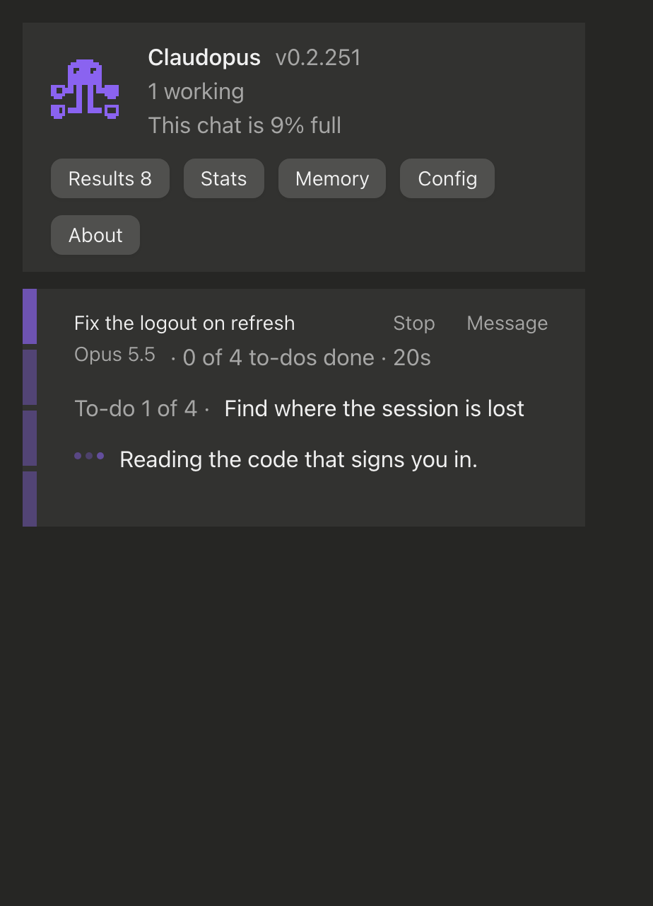
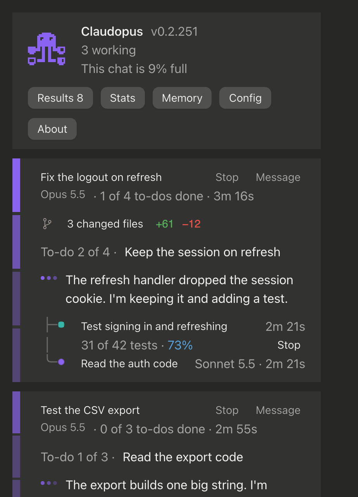
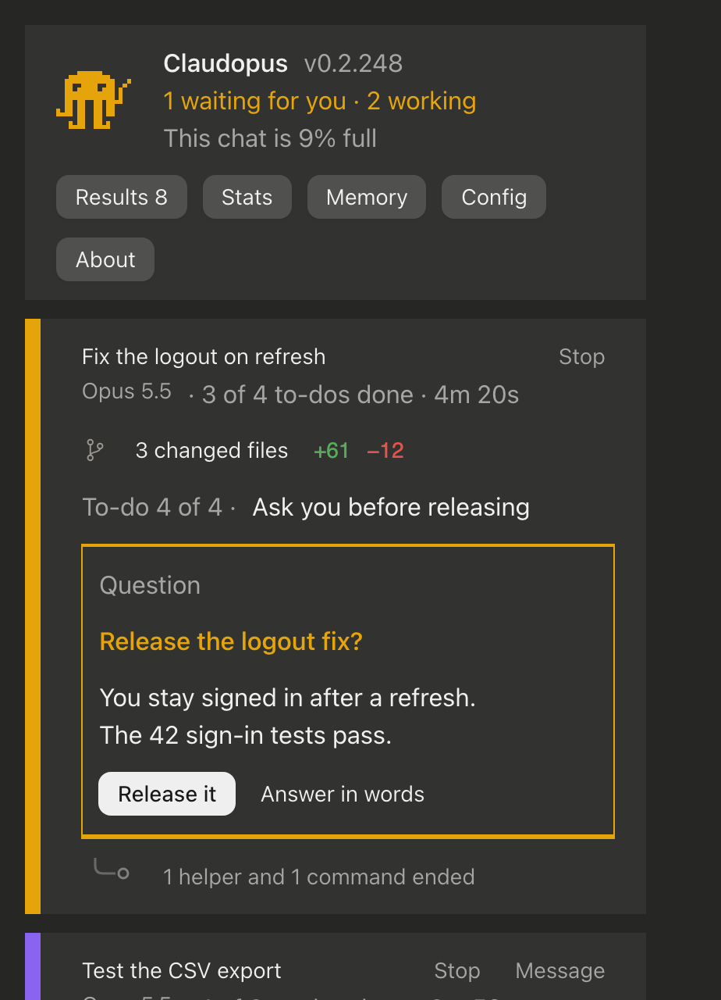
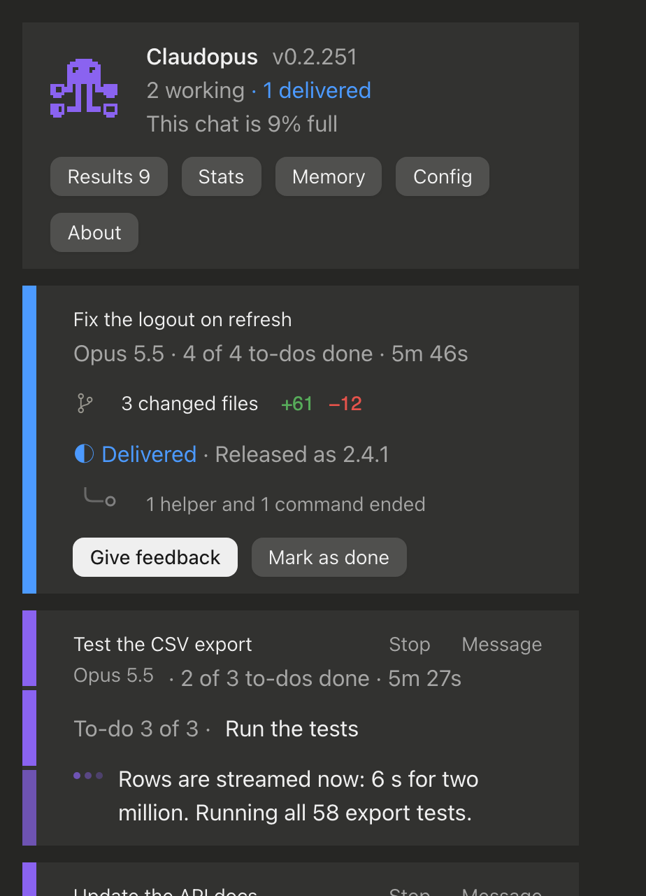
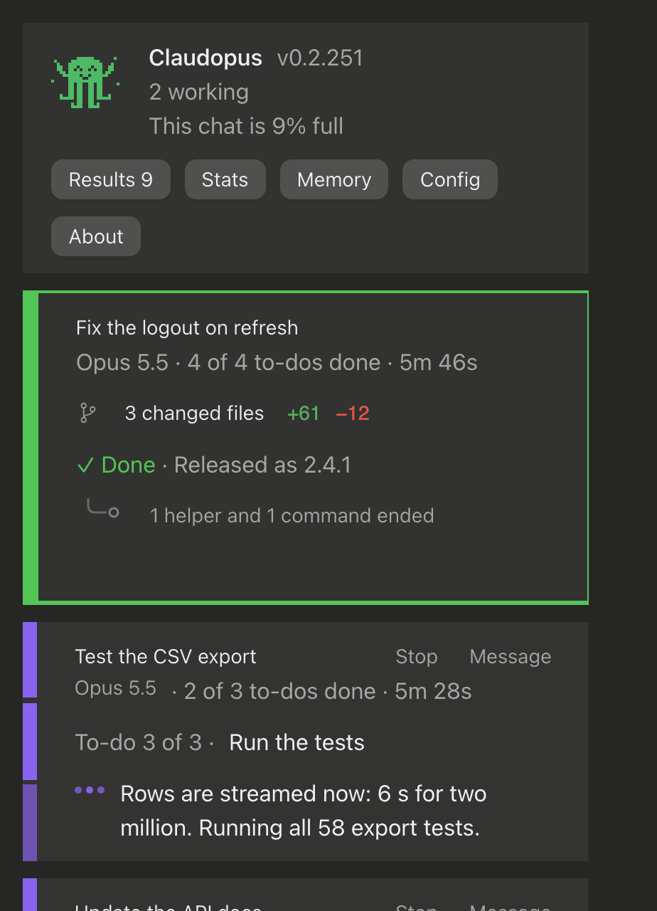
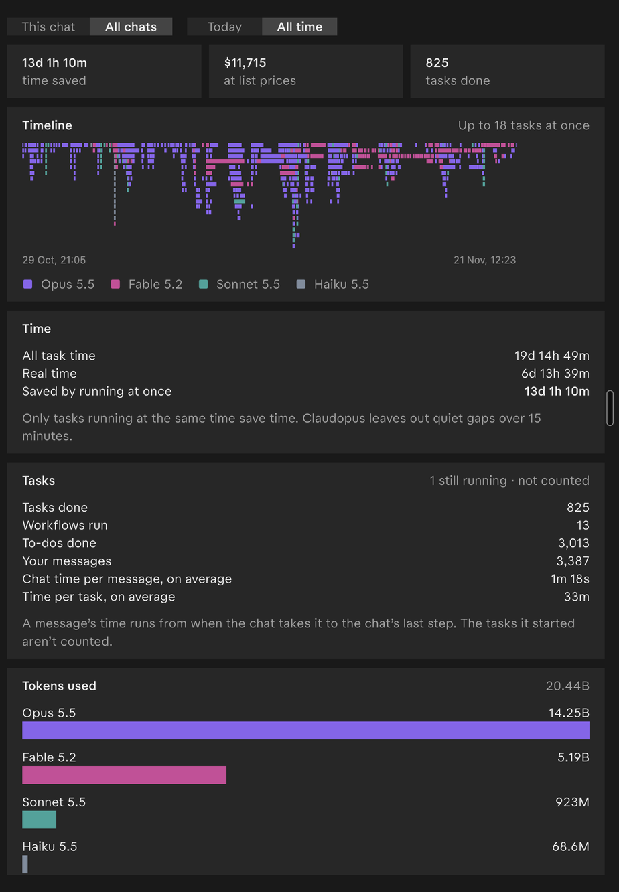
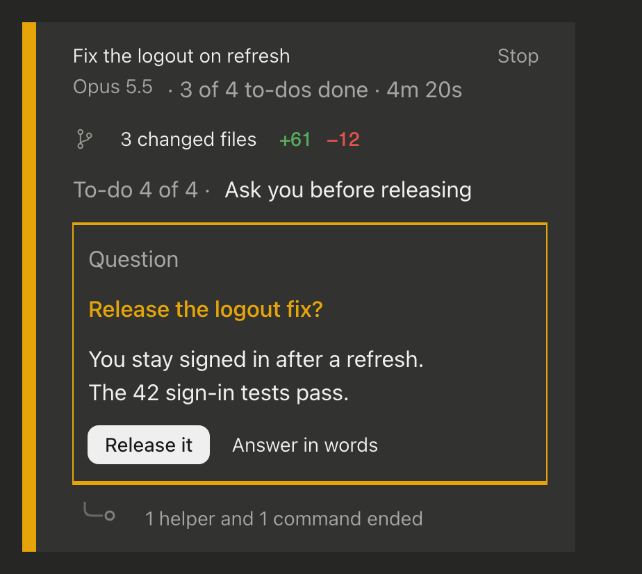
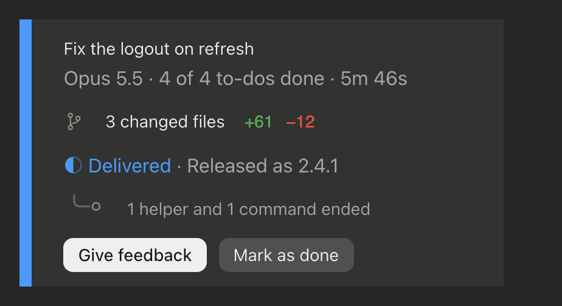
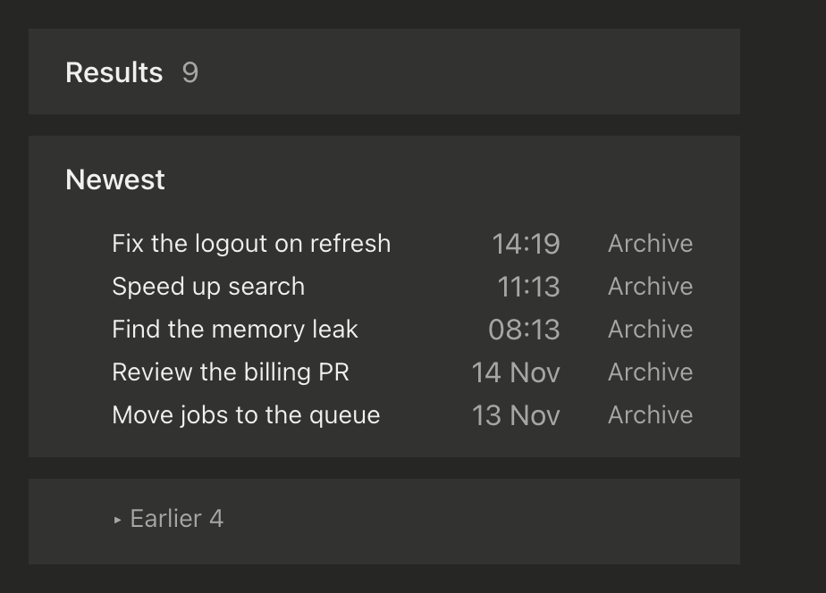
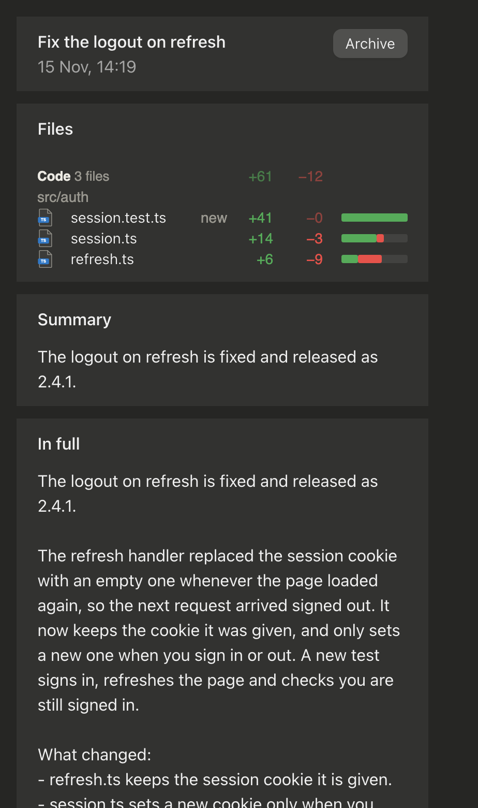

Claude Code, with eight arms
Do 3× more with Claude Code, at the same time.
Claude Code does one thing at a time, so you ask and then you wait. With Claudopus you keep asking. Every request starts working straight away, side by side, and one panel shows them all and brings you the one that needs you.
- 2.99×as much work at once, measured
- 19½ daysof Claude's work in 6½ days
- 825tasks done in three weeks
Three weeks of real use, and what the figures don't show
/plugin marketplace add dimka3553/claudopus/plugin install claudopus@claudopusTwo lines at the Claude Code prompt. Free, MIT, macOS and Linux.





One task needs you. Its question comes to the top of the panel.
The problem
You have three things to ask for. Two of them wait.
A chat takes your requests in turn. While Claude works on the first, the next two wait. So you wait too, or you open more chats and lose track of them.
Claude Code alone one after another
The striped part is waiting. Done after all three, one by one.
With Claudopus side by side
Each one starts when you ask. Done when the longest one is.
A drawing of the idea, not a measurement. Tasks that run side by side use tokens side by side: five at once use them about five times as fast as one.
Proof from real use
The 3× is measured: 19 days of task time fit into under 7.
These are the author's own figures from the Stats tab, for every chat from 29 Oct to 21 Nov 2026. Task time over real time comes to 2.99, so about three tasks were running whenever any ran.
- 2.99×task time over real time
- 825tasks done
- 19d 14h 49mof task time, added up
- 6d 13h 39mof real time while any task ran
- 18tasks at once, at most
- 1m 18sthe chat's time per message, on average
What the 3× means, and what it doesn't
- It is task time divided by real time. Quiet gaps of more than 15 minutes, with nothing running, are left out.
- It isn't three times the output. A task in the background can take longer than one you sit and watch, and some tasks redo what another got wrong.
- It isn't less typing. Those weeks still took 3,387 messages. What goes is the waiting.
- It isn't cheaper. Tasks side by side use tokens side by side: those weeks used 20.44 billion tokens, $11,715 at API list prices. On a subscription, you reach your limits sooner.
- It is one person's use, counted by Claudopus itself from Claude Code's own records.


What changes
Claude Code, with eight arms.
Claudopus adds to Claude Code. It doesn't replace it. You type the same messages in the same chat, and five things change about what happens next.

1 · While Claude works
Ask for the next thing now.
Each message starts a task of its own. The chat answers in a line and is free for your next message, so three requests work side by side instead of waiting in line.
Every task is a card: its to-dos, the one it is on, and a line on what it is doing now. Its helpers and long commands hang under it, and Stop ends a command or the whole task.
The tasks do the work, so the chat stays small. Here it is 9% full with three tasks at work.


2 · When a task needs you
What needs you comes to you.
A question turns its card amber and brings it to the top of the panel, from every chat, with buttons to answer and a box for your own words. A short sound plays, and a notification names the task.
A question never times out. It stays until you answer, and the other tasks keep working.
3 · Before it ships
Nothing reaches main until you press.
Claudopus has each task change code in a worktree and a branch of its own, so tasks working side by side don't touch each other's files.
A task reaches main only through one release command, and only after you press Release it. Claudopus refuses a task's own push to main.


4 · When a task finishes
You decide when it's done.
A finished task says Delivered and stays at the top of the panel until you press Mark as done. Give feedback puts the same task back to work on the same card.
A chime plays and a notification names the task, so you can be somewhere else while it works.
5 · Next week
Nothing you asked for gets buried.
What every finished task found is kept in Results, the newest first. Open one and it begins with the files its task changed, then what it found. They are plain files on your machine, so they are still there after the chat is gone.
How Results works, step by step


You keep the ideas. Claudopus keeps track of the rest.
Every picture of the panel on this page is drawn by the code of Claudopus 0.2.251, with made-up tasks. The tour is a 1 minute 36 film of an earlier version.
Two lines to try it. One line to turn it off.
Type them at the Claude Code prompt, in a terminal. Nothing else about how you work has to change.
It needs a recent Claude Code, and it adds its author's working principles to every chat.
/plugin marketplace add dimka3553/claudopus/plugin install claudopus@claudopus/claudopusopens the panelAnswer y to add the marketplace, then press Enter to pick the first choice, the user scope. Then /claudopus opens the panel. Nothing has to be typed in each chat. To turn it off, type /plugin disable claudopus@claudopus.
In the Claude desktop app
Click + next to the prompt box, then Plugins. Add a marketplace with dimka3553/claudopus, then add the plugin named claudopus.
From a shell
claude plugin marketplace add dimka3553/claudopusclaude plugin install claudopus@claudopusIf the short form fails over SSH
Use the full address in its place:
https://github.com/dimka3553/claudopus.git
What you see afterwards
- Claudopus is on in every chat you open from then on, in every folder. The first time, the panel opens with a welcome, and Bring in old chats reads your past chats into its memory.
- You send a message. The chat answers in one line, starts a task in the background, and is free for your next message.
- The panel opens beside the chat by itself when a task starts. If you close it, it closes in every chat. Type
/claudopusto open it again. - While tasks run, a bar above the prompt shows memory, processor, graphics, battery, disk and network, with Claude's own share in purple.
- When a task finishes, its card says Delivered, and the chat passes on its result. Press Mark as done, and the panel lists it under Finished.
Good to know before you install.
It uses tokens faster
Each task uses its own tokens, so five tasks at once use tokens about five times as fast as one. On a subscription, that uses up your limits sooner. With an API key or other pay-per-use billing, it multiplies what you pay in that time.
It adds its author's principles
Claudopus adds its author's working principles to every chat, and they shape how Claude answers. They are short rules, such as giving short replies and bringing solutions before questions. Read the principles before you install.
It can ask for your Mac's password
When a task needs an admin command, its card shows the exact command, and Claudopus runs it only after you press Allow. Claudopus never saves the password. Each admin command asks for it, in macOS's own box on a Mac, or otherwise in a box at the top of the panel. It is never put in a chat, a file or a log.
It needs
- Claude Code in the terminal or the desktop app; it is tested with 2.1.325, and older versions may not draw everything.
- Access to the model the chat picks for each task: Opus for most, Sonnet for long searching and reading, Fable only for heavy tasks.
- The panel's Stats tab reads Claude's records with
jq, which macOS 15 and later include.
Where it works, and where it does not
- It runs on macOS and on Linux.
- It has been seen working in the macOS desktop app, and in a terminal on Linux.
- On Linux, passwords and keys are saved in files only you can read, notifications need a desktop, and small copies of pictures need ImageMagick.
- VS Code has not been tried yet.
- It does not work on Windows under WSL, because plugins do not load there.
- It does not work where your organization's admins block mods.
- In
claude -pprint mode and in cloud sessions there is no panel.
You can turn it off
Type /plugin disable claudopus@claudopus at the prompt. The same line with enable turns it back on, and with uninstall it is removed.
Your memory folder is left in place.
Where the code is.
github.com/dimka3553/claudopus
The README there has the settings and the rest of the detail. The code is under the MIT licence.